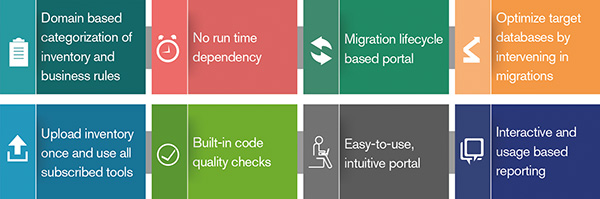

Complex computing infrastructure in the 20th century was expensive and required applications to optimize processing to keep computing costs low. Business models and business processes were entirely different when such legacy software was written. Legacy software is deeply embedded in organizations with great complexity. Further, there is a plethora of problems with legacy applications such as lack of agility, skill shortage, and high cost of ownership.
Today, computing costs are not a concern anymore. Agile, proactive, flexible, and real-time prescriptive IT systems are imperative for business growth. To align with this changing trend, Syntel offers advanced legacy modernization tools, powered by MIII (Manage, Migrate and Modernize). MIII accelerates legacy application modernization and migration to new platforms enabled by digital capabilities. Syntel’s business-aligned legacy modernization services are backed by in-house automation accelerators and they provide 360° coverage for apps and infrastructure modernization.
Syntel’s legacy modernization practice, MIII, encompasses unique services and an IP-based platform that delivers a cost-effective, simplified, and scalable technology ecosystem. This solution adopts a risk-mitigated and cost-effective orientation towards unlocking business advantage and creating greater value.
| Transformation Consulting | Re-architect | Automated Migrations |
|---|---|---|
|
|
|
All MIII services are enabled by tools and accelerators to make legacy modernization services faster, cheaper, and risk-free. Syntel’s legacy modernization tools are grouped under a single self-service portal called Exit Legacy.
Plan, assess and accelerate legacy modernization to digital platforms with Syntel’s Exit Legacy portal. It hosts accelerators that help in legacy application modernization. Syntel’s application modernization services ensure that the entire ecosystem is modernized, instead of just application components or data.
| Analysis Workbench | Language Conversion | Data/Database Migration |
|---|---|---|
Inventory Analysis Tool
|
Assembler to COBOL
|
VSAM to DB2
|
Business Rules Extractor
|
COBOL to Java
|
IMS to DB2
|
JCL to Spring Batch
|
Syntel also offers its Agile consulting capabilities for legacy modernization to deliver quick, on-time and top quality results to its customers.

100%
retention of investments and skill-sets in legacy applications as well as protection of intellectual property (IP)
~70%
automation using Syntel's IP and partner tools
25%
faster time-to-market through follow-the-sun model
SMAC
integration with the latest technologies such as social media, mobility, analytics and cloud computing
Improved availability, efficiency, stability, scalability, and customer experience